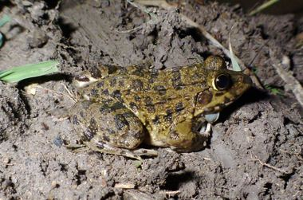

Skip to content
सीधे सामग्री पर
अवध जैव विविधता एटलस
Awadh Biodiversity Atlas
This month
इस महीने
Explore
खोजें
Find
पहचानें
Learn
सीखें
Make & use
उपयोग
About
परिचय
हिं
EN
☀
☾
Home
›
Explore
Frogs & toads
मेंढक
13 species of the Basti–Ayodhya countryside.
बस्ती–अयोध्या के गाँवों की 13 प्रजातियाँ।
भेंडुक
Asian Common Toad
Duttaphrynus melanostictus
Toxic
फुदकी मेंढक
Asian Grass Frog
Fejervarya limnocharis
रंगीन मेंढक
Common Indian Kaloula
Kaloula taprobanica
पहाड़ मेंढक
Indian Bull Frog
Hoplobatrachus tigerinus
Protected by law
बिलकारी मेंढक
Indian Burrowing Frog
Sphaerotheca breviceps
हरा मेंढक
Indian Green Frog
Euphlyctis hexadactylus
पेड़ मेंढक
Indian Tree Frog
Polypedates maculatus

चित्तीदार मेंढक
Jerdon's Bullfrog
Hoplobatrachus crassus
गुब्बारा मेंढक
Marbled Balloon Frog
Uperodon taprobanicus
चितकबरा भेंडुक
Marbled Toad
Duttaphrynus stomaticus
छोटा टिड्डा मेंढक
Nilphamari Narrow-mouthed Frog
Microhyla nilphamariensis
छोटा मेंढक
Ornate Narrow-mouthed Frog
Microhyla ornata
कूद मेंढक
Skittering Frog
Euphlyctis cyanophlyctis